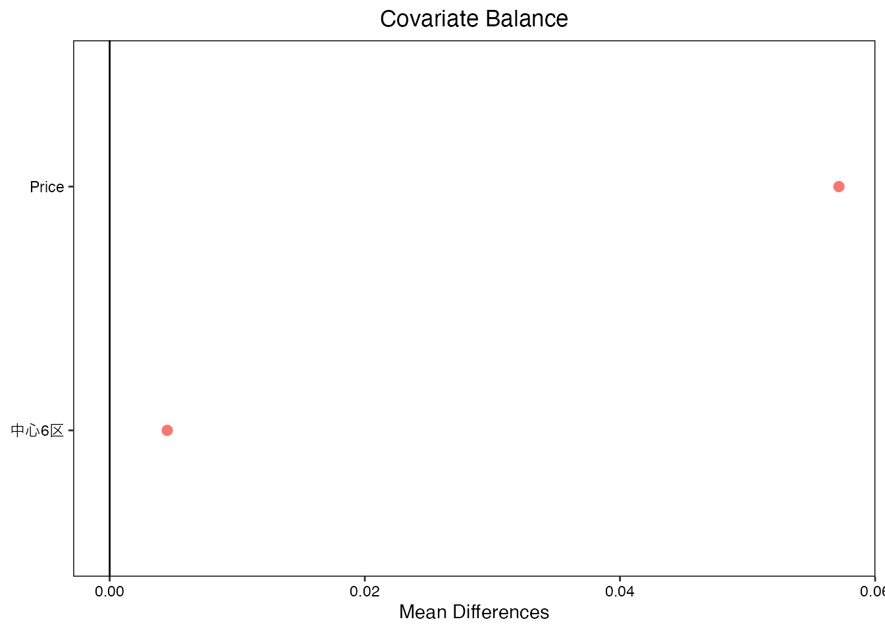

1 バランス後の比較
バランス後の比較 (Balanced Comparison) では、グループ\(D\)の間で、\(X\)についての差を解消した後に、\(Y\)についての平均差を推定します。 このような比較は、因果効果や格差の推定の肝となります。
まず実例から紹介します。
1.1 不動産市場の年次比較
東京23区の中古マンション市場において、2022年と2021年の取引価格と立地(中心6区(CBD; 港区、中央区、文京区、千代田区、渋谷区、新宿区)かそれ以外か)について、平均的な差を図示します。
2022年の平均取引価格は、2021年に比べて上昇しており、一見不動産市場における価格上昇が続いているように見えます。 しかしながら、同時にCBDの物件割合も増加しています。 一般にCBDに立地する物件の方が、高い取引価格が予想されます。 このため立地によって、取引価格の上昇が”底上げ”されている可能性があります。
もし中心6区の物件割合が不変であった場合、平均取引価格にどのような差が残るでしょうか？ このような問いに対して、バランス後の比較分析は回答できます。
以下では実際のデータを用いて、取引年と立地(CBD であれば1、それ以外であれば0)ごとに、平均取引価格を示しています。 また各取引年における取引事例の立地割合も算出しています。
| 平均価格 | CBD | 取引年 | 事例割合 |
|---|---|---|---|
| 37.748 | 0 | 2021 | 0.784 |
| 60.474 | 1 | 2021 | 0.216 |
| 39.150 | 0 | 2022 | 0.779 |
| 64.814 | 1 | 2022 | 0.221 |
繰り返し期待値の法則を用いると2022年と2021年の平均取引価格の差を算出できます。
繰り返し期待値の法則
\[Yの平均値 = [X=1] 内での Y の平均値\times [X=1]の割合\]
\[+ [X=2] 内での Y の平均値\times [X=2]の割合\]
\[+...\]
実際に適用すると2022年、2021年の平均取引価格は、以下のように計算できます。
\[2022年の平均価格 = 64.814\times0.221 + 39.150\times 0.779=44.810\]
\[2021年の平均価格 = 60.474\times0.216 + 37.748\times 0.784=42.658\]
2022年と2021の平均差を計算すると、2022年の平均取引価格の方が、2.153ほど高くなっていることが確認できます。
繰り返し期待値の法則自体は、非常にシンプルな計算ルールですが、「\(X\)のバランス」の意義を明確にします。 平均価格の違いは、同じ立地内での平均取引価格の違いと立地ごとの事例割合の違いによって生じます。 立地にかかわらず、2022年の平均取引価格は、2021年よりも高くなっています。 同時に、CBDの物件が取引されている割合は21.6 \(\%\) から 22.1 \(\%\) に上昇しています。
バランス後の比較分析では、「取引されている物件に占めるCBDの割合が、変化しなかった場合」の 平均取引価格の変化を推定します。 すなわちWhat-if分析の一種であると考えられます。
1.2 バランス後の平均差
本ノートにおいて、バランス後の比較分析の一つであり、バランス後の平均差を推定します。 バランス後の平均差は、バランス後の平均値の差として定義します。 ターゲットをこのように設定すると、取引年にかかわらず、CBDとそれ以外に立地する事例の割合は一定となります。 よって、平均価格の変化を生み出す要因から、事例割合の変化は排除できます。
バランス後の平均値
\[Yの平均値 = [X=1] 内での Y の平均値\times [X=1]のターゲットとなる割合\]
\[+ [X=2] 内での Y の平均値\times [X=2]のターゲットとなる割合\]
\[+..\]
- ターゲットとなる割合は研究者が定める。
1.2.1 実例
以下の例ではターゲットを、「すべてのSizeが同じ割合」と設定します。
| 平均価格 | CBD | 取引年 | 事例割合 | ターゲット |
|---|---|---|---|---|
| 37.748 | 0 | 2021 | 0.784 | 0.500 |
| 60.474 | 1 | 2021 | 0.216 | 0.500 |
| 39.150 | 0 | 2022 | 0.779 | 0.500 |
| 64.814 | 1 | 2022 | 0.221 | 0.500 |
\[2022年のバランス後の平均価格 = 64.814\times0.5 + 39.150\times 0.5=51.982\]
\[2021年のバランス後の平均価格 = 60.474\times0.5 + 37.748\times 0.5=49.111\] バランス後の平均差は、2.871であり、バランス前に比べて拡大しました。
1.2.2 Overlapの仮定
バランス後の平均差が計算できる前提条件は、Overlapの仮定が成り立っていることです。 これは、ターゲットが正の値となる(\(0\)ではない)\(X\)について、すべての\(D\)の値について平均値が計算できることを要求します。
Overlapの仮定
- ターゲットが正の値を取る全ての\(X\)の組み合わせについて、\(D=1\)の事例も\(D=0\)の事例も、両方存在する: \[1 > E[D|X] >0\] ただし \(E[D|X]\) は\(D\)の母平均(\(D=1\)の割合)
Overlapが成り立っていない場合、\(D=1\) または \(D=0\) しか存在しない\(X\)の組み合わせが存在することになります。 結果、厳密なバランス後の比較は根本的に不可能です。 例えば、教育経験\((=X)\)をバランスさせた男女間\((=D)\)での賃金格差を推定したいとします。 しかしながらデータにおける男女間での教育経験の分断が極めて大きく、大学卒以上の女性は存在しないとします。 この場合、大学卒の女性割合は\(0\)であり、どのようなBalancing weightを用いたとしても、男性/女性の大学卒比率を揃えることは不可能です。 言い換えるならば、大学卒の女性が存在しないため、大学卒内で男女間の賃金を比較できないため、バランス後の比較は不可能です。
1.3 他の実例
バランス後の比較分析の応用例は、大量に存在します。 以下では実務においてよく利用されている指標を紹介します。
1.3.1 合計特殊出生率
バランス後の比較分析は、社会/政策分析において幅広く利用されています。 代表例は、合計特殊出生率の国家間/時代間比較です。
出生数の動向を把握する上で、新生児数を年次や国家間比較は、有益だとみなされてきました。 合計特殊出生率 は、成人の年齢構造の違いをバランスさせるために利用されている指標です。 単純な出生率（一年間に生まれた子供の数/女性の数）は、成人の年齢構造の影響を強く受ける可能性があります。 社会において高齢者の比率が高まれば、出生率は低下することが予想されるからです。 対して合計特殊出生率は、「仮に年齢構造が同じであった場合」の出生率を、以下の方法で推定しています \[\frac{15歳の女性が産んだ子供の数}{15歳の女性の数} +..+ \frac{49歳の女性が産んだ子供の数}{49歳の女性の数}\]
1.3.2 既存店ベースの比較
バランス後の比較は、企業の経営戦略を考える上でも用いられます。
小売や飲食/宿泊業などでは、しばしば既存店に絞った上での、売上比較がなされます。 例えば、あるコンビニチェーンで、店舗あたりの平均売り上げが1000万円増大したとします。 同時に去年から今年にかけて、新規出店も大きく増加したとします。 新規店の方が売上が高くなる傾向がある場合、新規店割合の違いが、平均売上の上昇をもたらした可能性があります。
既存店割合をバランスさせるシンプルな方法として、既存店のみに絞った平均売上を比較がよく行われます。 このような分析では、すべての年について、既存店比率は100\(\%\)となり、完全なバランスが達成されます。
1.4 応用上の課題
バランス後の比較は、シンプルな枠組みです。 上記の例の通り、大規模なデータを用いて、少ない\(X\)をバランスさせるのであれば、単純な計算でバランスできます。
しかしながら、多くの応用では複数の\(X\)を同時にバランスさせることが求められます。 このような応用では、同じ属性を持つ事例数が少なくなり、実際の計算は困難になります。
多くの応用で活用できる、より実践的な推定方法が求められます。